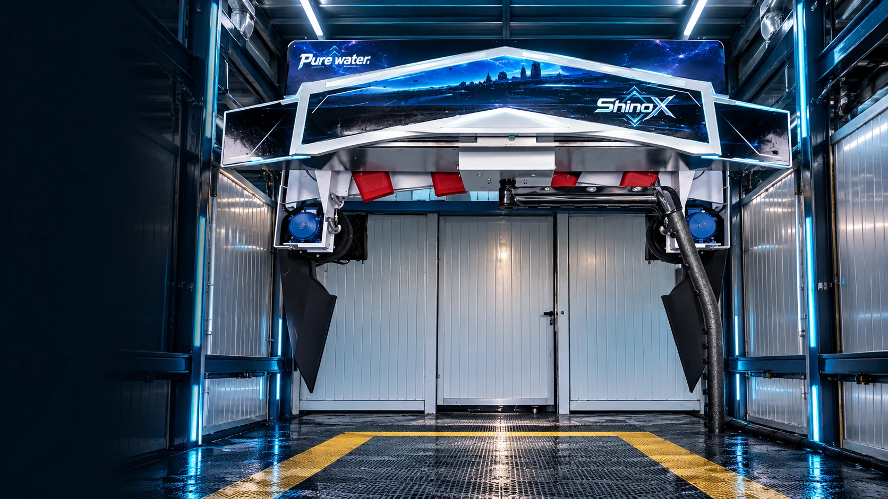

從多功能自助洗車設備、無接觸式自動洗車機到智慧支付與周邊系統，ShinoX 提供彈性的設備組合，協助業主依據場地規模、投資預算及經營模式，選擇合適的配置方案。
雲端儲值機影像待確認等待經確認的正式影像
B2 洗車機影像待確認等待經確認的正式影像

軟水過濾設備了解設備 ↗廢水循環設備了解設備 ↗售卡儲值機了解設備 ↗觸控雲端繳費機了解設備 ↗1-1 投幣箱了解設備 ↗吸塵箱了解設備 ↗投幣式臭氧機了解設備 ↗投幣式空氣噴槍了解設備 ↗投幣式吹水機了解設備 ↗格子販賣機了解設備 ↗部品販賣機了解設備 ↗
正式設備影像、查驗規格與 DM 整理中；本頁不以虛構外觀代替真實機型。
SHINOX / PROFESSIONAL CAR WASH CHEMICALS
20L 專業洗車藥劑系列

LET’S BUILD WHAT’S NEXT